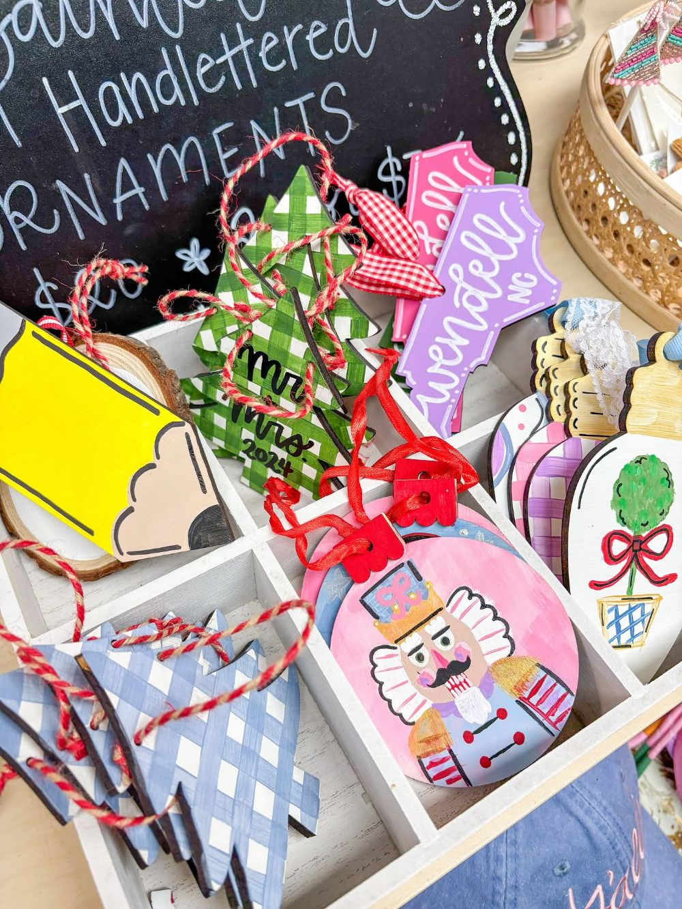
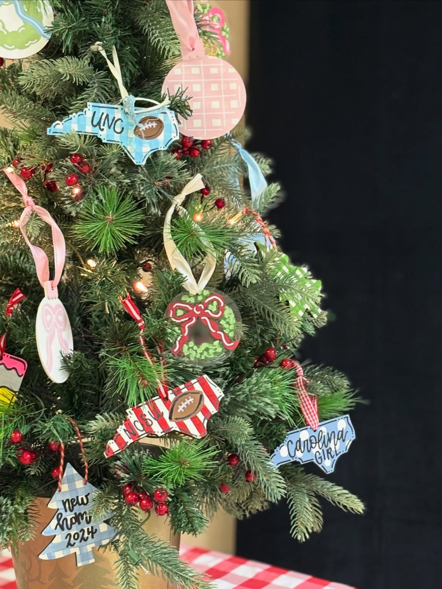
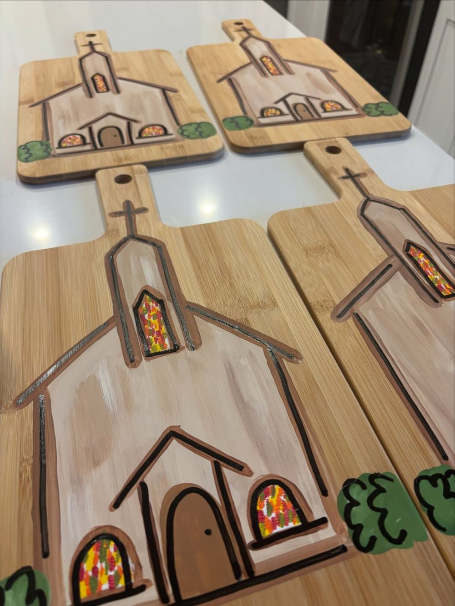
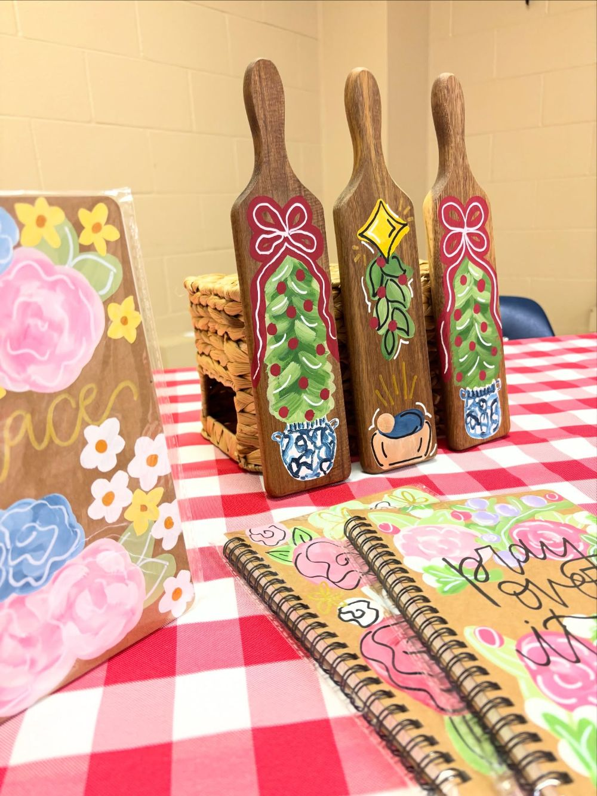
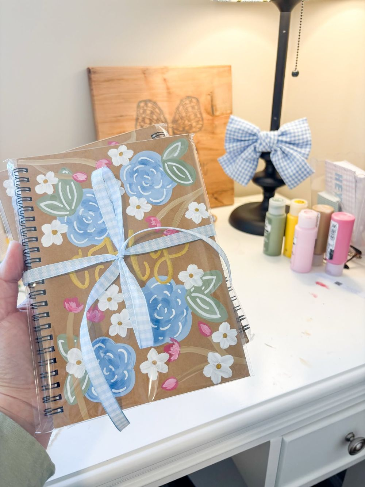

Christmas ornaments
Firsts, names and years, hometowns and school colors. North Carolina state ornaments are a favorite.
Hand painted gifts
Wooden ornaments, boards, paddles and notebooks, painted and lettered by hand with names, dates, hometowns and school colors.

Ornaments
Gingham trees lettered for a first Christmas married, a pink nutcracker, a topiary with a red bow, and North Carolina ornaments lettered with a hometown or a school.
Each one is painted by hand on wood and strung with ribbon or twine, ready to hang or give.




What can be painted
Hand painted gifts from Chintz Creative are small wooden and paper pieces painted and lettered by Bailey Powers: Christmas ornaments, cutting boards, paddles and notebooks, personalized with names, dates, places and colors.
Firsts, names and years, hometowns and school colors. North Carolina state ornaments are a favorite.
A church, a home or a place that matters, painted on a bamboo board for the kitchen or the wall.
Seasonal designs and lettering on wooden paddles, for decor or for a sorority or team gift.
Floral painted covers with a name or a verse lettered in gold.
Questions
Yes. Wooden ornaments are hand painted and hand lettered with names, dates and phrases, like Mr. and Mrs. 2024 or new home 2024, in gingham, plaid and floral designs.
Yes. North Carolina state ornaments can be painted in school colors and lettered with UNC, NCSU, a hometown like Wendell NC, or Carolina girl.
Yes. Ornaments, cutting boards, paddles and notebooks can be ordered in sets for teachers, bridesmaids, churches, teams and events. Put the quantity on the intake form.
Yes. Cutting boards can be painted with a church, a house or another meaningful place. Send a photo with the intake form.
Also from the studio: Custom watercolors · Hand lettering · Banners
Order painted gifts
Choose Painted gifts on the intake form, with the pieces, quantity and wording.